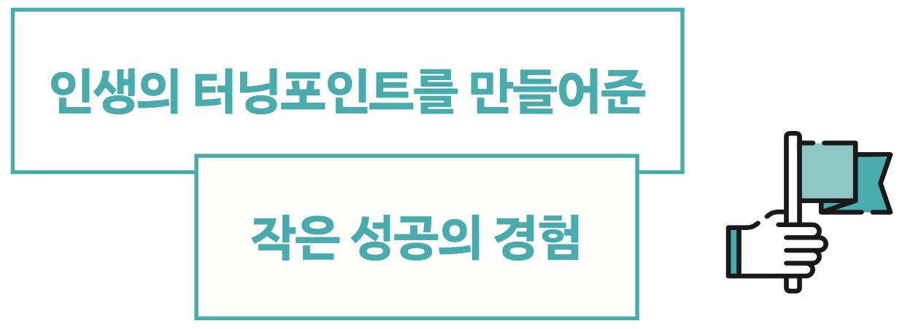

프롤로그

2017년 12월, 대학교 3학년 2학기를 마치고 스물다섯 살을 앞둔 나는 휴학을 결심했다. 1년간 취업을 위해 자격증을 취득하고 공모전에 참여하며 스펙을 쌓기 위해서였다. 그렇게 2018년을 일주일 정도 앞두고 내년을 준비할 때, 한 가지를 깨달았다. 내가 어느 곳에도 소속되지 않고 스스로 일상을 이끌어야 하는 것은 태어나서 이번이 처음이라는 사실이었다. 당장 다음 주부터 내 모든 일상은 백지상태였다. 아무것도 하지 않을 수도, 무엇이든 할 수도 있었다. 선택권은 오롯이 내가 쥐고 있었다.
두려웠다. 누군가의 통제에서 벗어나 온전히 나 홀로 삶을 꾸려야 한다는 게 마치 사막 한가운데 떨어진 기분이었다.
어렵게 결정한 휴학이었기에 시간을 허투루 쓰고 싶진 않았다. 그래서 우선 일찍 일어나보기로 했다. 헐레벌떡 일어나 수업에 뛰어가던 지난날과는 달리 매일 마침 6시에 규칙적으로 일어나자고 마음먹었다.
하지만 어떻게? 혼자 살다 보니 누군가 지켜보지 않는다면 작심삼일로 끝날 게 뻔했다. 일찍 일어나겠다는 나와의 약속을 지키려면 어떤 장치가 필요했다. 그러다 유튜브가 생각났다.
‘매일 6시에 일어나는 걸 영상으로 기록해보면 어떨까?’
당시 막연하게 유튜브를 시작해보고 싶었는데 이 도전이 재미있는 소재가 될 것 같았다. 검색해보니 그때까지 ‘아침 6시 기상’을 직접 실천하고 올린 영상은 없었다. 그렇게 나의 첫 도전, ‘한 달 동안 6시에 기상하기’가 시작되었다.
12월 25일 크리스마스 당일이 디데이였다. 빨리 시작할수록 첫 영상이 세상에 빨리 나올 수 있었으므로 방학이 되자마자 실천에 옮겼다. 도전을 시작한 이유와 매일 아침 6시에 일어나는 나의 모습을 영상으로 담겠다는 다짐을 촬영하고 잠자리에 들었다. 침대 머리맡에 카메라를 두고 핸드폰의 알람을 오전 5시 55분으로 맞췄다. 스스로 오로지 내 삶을 위해 이런 선택을 했다는 사실만으로 흥분이 가라앉지 않았다. 왜 진작에 이런 도전을 하지 않았지? 마음을 간신히 억누르고 내일의 성공적인 기상을 위해 잠을 청했다.
눈을 떴다. 분명 알람 소리가 들리지 않았다. ‘설마 첫날부터 실패한 건가?’ 싶어 화들짝 놀라 핸드폰을 집었다.
오전 5시 50분.
휴. 안도의 한숨을 내쉬었다. 긴장감 때문인지 알람이 채 울리기도 전에 잠에서 깬 것이었다. 그러고 보니 어떤 책에서 ‘알람을 맞추지 않아도 특정 시간에 일어나야겠다고 강하게 마음먹으면 자연스럽게 눈이 떠진다’는 내용을 읽은 적이 있다. 엄청난 카타르시스가 느껴졌지만 차마 소리는 지르지 못하고 혼자서 “예쓰!”라고 속삭이며 1일 차의 성공을 만끽했다.
바로 물 한 잔을 들이켜고 옥상으로 올라갔다. 아직 해도 뜨지 않은 시간의 공기는 상쾌했다. 옥상에서 내려다본 천호대교에는 수십 대의 차가 지나다니고 있었고, 이미 버스에 몸을 실은 사람들도 보였다. 다들 이렇게 열심히 살고 있는데 나는 지금까지 무엇을 하고 있었나. 그래도 이렇게 변화된 나와 마주하자 자괴감보다는 뿌듯함이 나를 감쌌다.
지금부터는 100퍼센트 나만의 시간이었다. 계획을 제대로 세우지 않으면 이 귀한 시간을 잠으로 흘려보낼 게 뻔했다. 그래서 오늘 하루 몇 시에 무엇을 할지 간단히 계획을 세우고 그동안 하고 싶었던 사진과 영상 편집을 공부해보기로 했다.
그렇게 알찬 하루를 보내고 다시 찾아온 밤. 늦게 자는 습관은 여전히 남아 있어 거의 밤 12시까지 깨어 있었다. 그러다 보니 하루가 정말 길었다. 24시간이 이렇게 긴지 처음 알았다. 피곤했지만 첫 성공의 기쁨과 ‘내일도 일찍 일어나서 이 성취감을 누려야겠다’는 기대감을 품고 잠을 청했다.
알람이 울렸다. 웃으면서 눈을 떴다. 두 번째 날도 성공이다. 내가 계획한 30단계 중 벌써 2단계를 성공으로 채웠다. 몸은 피곤했지만 마음만은 그 어느 때보다 에너지가 넘쳤다. 두 번째 날부터는 무엇을 할지 구체적으로 계획했다. 6시에 일어나기만 하면 된다고 생각했던 이 도전의 성패는 결국 하루를 어떻게 능동적으로 사는지에 달려 있었다(당시에 플래너를 직접 디자인하고 출력해 사용했는데, 덕분에 지금까지도 시간별로 계획을 세우는 습관을 유지하고 있다).
셋째 날부터는 확실히 자신감이 붙었다. 눈을 뜨고, 하루 계획을 세우는 게 마치 내가 지금까지 해오던 루틴처럼 편했다. 특히 유튜브 콘텐츠를 만들기 위해 매일 아침 영상을 찍고 편집하다 보니 끝까지 성공하고 싶은 열망은 점점 커졌다. 2주쯤 되자 생활 패턴이 어느 정도 적응되어 평소보다 일찍 잠이 들었고 아침 5시 50분쯤 저절로 눈이 떠졌다.
물론 위기도 있었다. 무난하게 도전을 끝낼 수 있겠다고 생각했지만, 21일째 되던 날에 첫 실패를 맞이했다. 눈을 뜨자 평소와 다르게 방에 햇살이 가득했고 어쩐지 피곤함보다 상쾌한 기분이 들었다. 시계를 보자 무려 8시. 일찍 잘 준비를 마쳤으나 예전 습관을 버리지 못하고 며칠간 늦게까지 유튜브나 미드를 봤더니 피로가 쌓인 모양이다. 멋지게 성공해서 짠! 하고 영상을 올리고 싶었는데 내심 부끄러워졌다.
어차피 채널을 아직 열지도 않았으니 포기할까 하는 마음이 잠깐 들었다. 그럼에도 계속해서 도전을 이어나갔던 이유는 6시 기상이 내가 태어나서 스스로 무엇인가를 바꾸겠다고 결심한 첫 번째 일이었기 때문이다. 고작 이 정도 일로 포기하면 앞으로 세상에 나가 부딪힐 수많은 어려움을 극복하지 못할 것 같았다. 결정적으로 지난 스무 번의 성공을 떠올렸다. 오늘의 실패는 그저 목표를 향해 가는 한 과정이라고 생각하기로 했다.
그렇게 하루 또 하루가 지나면서 영상도 점점 쌓여 30개에 가까워졌다. 어느덧 1월 25일, 목표했던 한 달의 마지막 날이 되었다. 도전을 마치고 꼬박 이틀에 걸쳐 8분 35초짜리 영상을 만들고 유튜브에 올렸다. 채널명은 한국타잔. 가슴속이 뭔가 표현하기 힘든 뜨거운 감정으로 벅차올랐다. 감동적이기도 하고 기쁘기도 하면서 또 다른 도전 정신이 샘솟았다. 무엇보다 영상 속의 내가 낯설었다. 그 안에서 나는 나도 몰랐던 잠재력과 끈기를 발견했다.
이 작은 의지는 내 삶을 변화시켰다. 스스로 삶을 주도하는 경험이 얼마나 즐거운 일인지 깨닫자 본격적으로 삶에 긍정적인 영향을 줄 수 있는 다양한 도전을 이어갈 수 있었다. 그 도전과 영상이 차곡차곡 쌓여 20개가 넘어가자 유일무이한 ‘도전 유튜버’라는 타이틀도 얻었다. 이듬해 도전한 5시 기상 영상은 무려 256만 조회수를 달성하기도 했다.
유튜브 채널이 성장하면서 나의 인생 역시 질적으로 달라졌다. 이후에도 계속해서 6시 기상을 지켰고 그 외에도 시도해보고 싶은 일이 생기면 거침없이 도전해보는 실행력을 얻었다. 도전이 끝날 때마다 성취감을 맛보면서 내 몸과 마음, 인생에 풍부한 자양분을 마음껏 주고 있다. 유튜브를 시작하지 않았다면 몰랐을 놀라운 변화다.
내가 지금껏 했던 도전들은 감히 시도해보기 어려운 일들이 아니다. 막대한 시간과 비용이 들지도 않는다. 일상에서 누구나 할 수 있는 일들을 생각하는 데서만 그치지 않고 하나씩 실천했을 뿐이다. 내가 늘 이야기하는 우리 채널의 모토 ‘Don’t think, just do!’처럼 말이다.
이 책에서는 이렇게 내가 경험한 ‘작은 실천’과 ‘작은 성공’ 23가지를 소개한다. 때로는 일주일, 때로는 한 달, 길게는 73일까지 걸렸지만 마침내 도전을 끝낼 때마다 나는 한 뼘씩 더 성장했다. 여러 번의 작은 성공이 모이면 언젠가는 큰 성공도 이룰 수 있을 것이다. 물론 그 과정에서 자잘한 실패도 자주 겪었다. 하지만 모든 성공이 완벽할 필요는 없다. 더 중요한 것은 도전했다는 사실 그 자체다.
내가 한 도전 중에는 분명 독자 여러분도 ‘어, 나도 해보려고 했는데!’ 혹은 ‘나도 해볼 만하겠는데?’ 하는 주제가 있을 것이다. 그런 생각이 들었다면 부디 생각으로만 남겨두지 말고 실천함으로써 나처럼 한 번의 작은 성공을 만끽해보자. 그것이 당신의 인생에 터닝포인트가 될지도 모르니까 말이다.